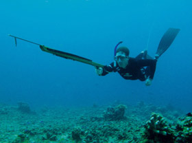

Spear Gun Fishing
{kind=link}
In the past two weeks there has been three sighting of people spear fishing. They're setting off from Sennen Harbour and beach, heading out along the coast.
Paul got in touch to say this;
Saddened to see a couple of blokes strapping knives to their legs and taking spear guns into the water. Never seen this before locally but have seen the after effects of it in Spain, ragged, half dead fish. What a waste and what shame people feel the need to take this sort of gear to such a beautiful beach.
Paul - 15th August, 2013
Responses
George got in touch following this comment to say;
I read the Sennen website fairly regularly as I love keeping up to date with goings on in this beautiful place. As a (bad) surfer, angler and spear fisherman I felt it right to respond to the comment posted by Paul. I would recommend you speak to any spearo's you encounter to find out exactly what they get up to underwater.
George - 31 August, 2013
Other news
Winter storms hit Sennen
News Item
Sennen Cove has been battered by the stormy atlantic all winter. 35ft waves have been breaking into the cliffs. Thankfully there has been no local loss of life.
Dogs on the beach
Community Discussion
The Sennen Beach dog ban between Easter and September has been inplace for nearly 2 years. Is this being followed bay all or are some not sticking to the rules?
It seems that George is a water lover. He puts forward a compelling viewpoint from experience.
I can't speak for all UK spear fishermen but myself and others I know are very careful to select specific species (mainly bass, mullet and flatfish), adhering to the minimum size limits and taking only a sensible number. There is no better way of selecting your catch without damaging or destroying any other fish.
Generally the visibility in Cornwall is superb so it it possible to have some really relaxing dives even if no target fish are encountered. We returned home today after a lovely week in Cornwall. I managed to dive this morning and took a total of two shots. The second hit and its dinner for tonight. The reason for carrying a knife is to dispatch the fish quickly and efficiently. It also acts as a piece of safely equipment in case the diver gets caught in anything.
George - 31 August, 2013
Original commenter
After seeing the post, Paul got back in touch
Hi, thanks for putting the other side of the case, interesting to read and well put, you sound a pretty sensible bloke. Sadly, I've seen the irresponsible side of their use ...damage and danger caused by kids and the guys at Porthchapel who I did speak to and were frankly, clueless... and that's the point I was making but I guess it's true in all activities, the responsible suffer for the actions of the irresponsible.
Paul - 19th September, 2013
Do you have a view on spearfishing? Let us know your thoughts by sending a message.
News from the web
Storm footage on YouTube
Friday, 14th February, 2014
Amatuer footage shows the enormous waves hitting Sennen, catapulting 200ft into the air. The swell coming in from the Atlantic hits the cliffs and flies over the lifeboathouse.
Source: Mail Online (via YouTube)

Are you tough enough?
Tuesday, 4th March, 2014
Some of Penwith’s most adventurous souls are gearing up for the UK’s ultimate obstacle endurance event.Tuff Enuff features 30 gruelling obstacles over a 12km course designed by Royal Marines.
Source: This is Cornwall

Lisa Lucas Art Exhibition
Thursday, 6th March, 2014
Lisa Lucas, a local artist, will be exhibiting her work at The Morvah Schoolhouse Gallery as their featured artist for March. The newly refurbished café space will host the "Hope Springs Eternal" exhibition.
Source: This is Cornwall